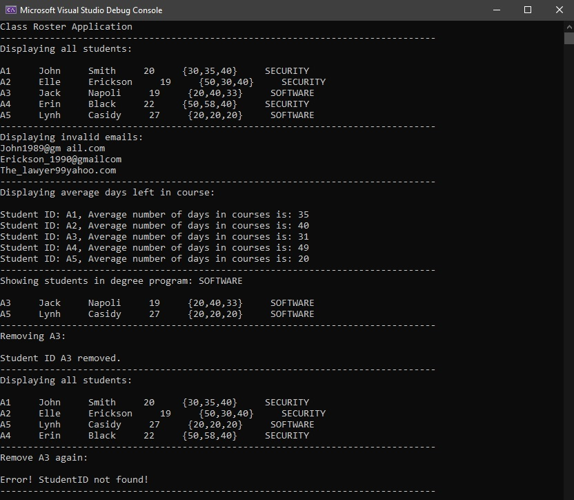

Class Roster System
 Overview
Overview
This project created a Class Roster that displayed the current university's students information. The contents of the system included the student's ID, first name, last name, age, days of completion for courses taken, and degree program. A code was also written to display a series of invalid emails due to spaces in the email's input or if it is missing the "@" or "." symbol. The system also parsed the input of the days of completion to average the number of days that the student is typically in their courses. Another action that the system can do is display only students in a specific degree program. The user has the ability to remove a student from the system by the student's ID and then refreshing to display the remaining students. Lastly, if the user tries to delete a non-existing student ID, an error message will be displayed.
Takeaway
This project was my first time using C++ and my first large coding project. I struggled with it at first because I've never really looked at C++ before, so it was a bit foreign to me. Being so new to programming as a whole and this being my first language at university, I was overwhelmed, but I didn't want to give up so quickly. I worked through projects from my school's textbook to give me a better understanding of setting up my code and the syntax of it. Once I grasped the syntax of C++, it made more sense to me to create the rest of the project. Overall, it taught me how to think like a programmer and how to better approach new languages.
Tools
● Visual Studio 2019
Language(s)
● C++
GitHub Repo
Project Output

◁ Bike Inventory Management System Student Planning Mobile App ▷